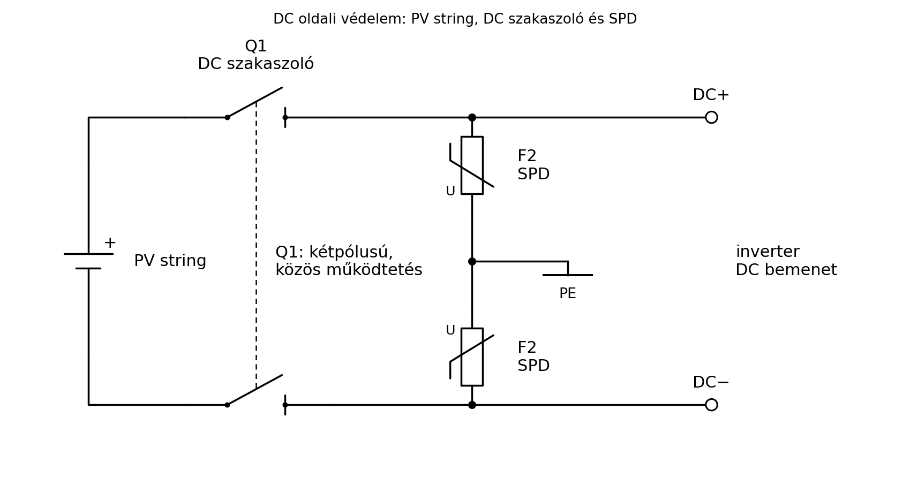
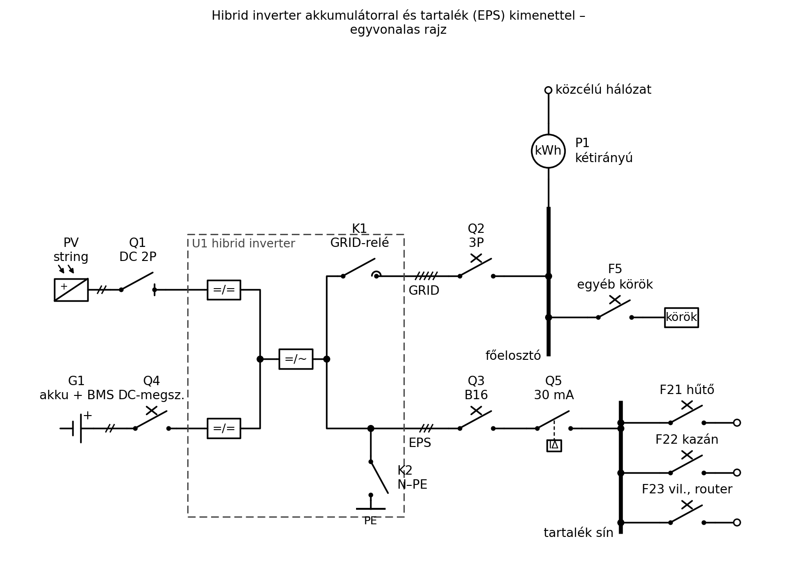
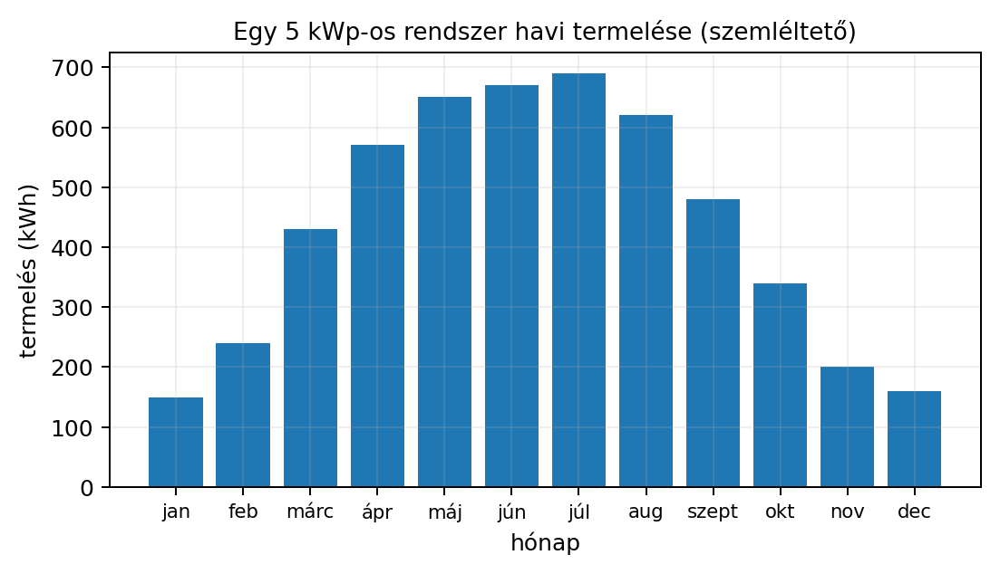

![HMKE egyvonalas rajza: két string, inverter, AC-védelem, főelosztó, mérőhely - Egyvonalas rajz alapállapotban; a vonásszám a vezetők száma (DC: + és −; AC: L1 L2 L3 N PE). A DC-oldal (szaggatott keret) fény alatt akkor is feszültség alatt van, ha Q1/Q2 és F3 nyitva. A mérőhely (P1, F01) a közcélú hálózat és a ház főelosztója között van; az inverter a főelosztó gyűjtősínjére csatlakozik, a fogyasztók mellé. Jelölés a könyv konvenciója szerint: kismegszakító F, áram-védőkapcsoló Q, SPD F0/F1/F2, mérőhelyi főbiztosító F01.](assets/ve133-diagram-3.png)
A napelemes rendszerrel elsőként általában akkor találkozik a szerelő, amikor egy családi ház villamos felújítása során az ügyfél azt kéri, hogy „napelemet is szeretne, és a többlettermelést adja el a hálózatba”. Ebben a helyzetben nem elég csak a paneleket felrakni: a rendszer egyenáramú (DC) oldala, az inverter, a váltakozó áramú (AC) oldali védelem és a hálózati csatlakozás mind együtt határozza meg, hogy a berendezés biztonságos, szabályos és hosszú távon üzemképes lesz-e. A háztartási méretű kiserőmű (HMKE) ma már nem kuriózum, hanem a villanyszerelői munka rendszeres része, ezért a napelemes rendszerek felépítését, védelmeit és a csatlakozási lépéseket ugyanúgy ismerni kell, mint egy lakáselosztó vagy egy motorvezérlés kapcsolását.
Egy napelemes kiserőmű legalapvetőbb láncolata a következő: a napelemmodulok soros füzérét (string) az egyenáramú oldalra csatlakoztatják, ahol egy DC szakaszoló, túlfeszültség-védelmi eszköz (SPD) és a megfelelően méretezett DC kábel biztosítja a védelmet. Ezután következik az inverter, amely a DC energiát a hálózattal kompatibilis, 230/400 V-os váltakozó árammá alakítja. Az inverter AC oldalán túláramvédelem, esetleg áram-védőkapcsoló (RCD) és egy hálózati csatlakozópont található, majd a mérőhelyről a termelés a közcélú hálózatba táplálható vissza. Az alábbi kapcsolási rajz a DC oldali védelmi elemek egy lehetséges elrendezését mutatja:

A rajz lényege, hogy a napelem string mindkét vezetője (+ és −) a kétpólusú DC szakaszolón át jut az inverter DC bemenetére, és a szakaszoló után, az inverter oldalán mindkét pólusról SPD vezeti le a túlfeszültséget a védővezető felé. Az SPD-t a Túlfeszültség-védelmi eszközök (SPD): típusok és beépítés alfejezetben megismert elvek szerint kell bekötni: minél rövidebb vezetékkel, a védendő eszköz (inverter) közelében.
Definíció. A napelemmodul (köznyelvben napelem panel) több napelemcellából sorba kapcsolt, időjárásálló tokozású egység, amely a beeső napsugárzást egyenárammá alakítja. A modul adattáblája megadja a jellemző munkaponti feszültséget (), a munkaponti áramot (), az üresjárási feszültséget () és a rövidzárási áramot (). A magyar gyakorlatban a modulok tipikus értéke 30–40 V, értéke 8–12 A a teljesítményosztálytól függően – de a pontos értéket mindig a gyártói adatlap határozza meg.
Az alábbi ábra (a) része a modul rétegeit mutatja: elöl az 1 edzett üveg, alatta a 2 EVA-fólia, a 3 sorba kötött cellák a forrasztott szalagokkal, újabb EVA-réteg és a 4 hátlap; a rétegeket az 5 alumínium keret fogja össze. A (b) hátulnézeten a 6 csatlakozódoboz látszik a 7 bypass-diódákkal, amelyek egy-egy cellacsoportot árnyék vagy hiba esetén áthidalnak; a 8 modulkábelek a 9 napelemes DC-csatlakozókban végződnek, a 10 adattáblán olvasható az , , és .
A bypass-dióda magyarázza a fejezet későbbi hibaesetét: egy zárlatos dióda körülbelül egy almodulnyi feszültséget „visz el” a modulból. A HTML-kiadásban a részekre mutatva azok szerepe olvasható.
Rögzítés. A modulokat a tetőszerkezethez rögzített sínrendszerre szereljük. Cserépfedésnél a tetőhorgot a cserép alatt vezetjük át, és a szarufához csavarozzuk; a modulokat a keretüknél leszorítók fogják a sínhez, kizárólag a modul adatlapján megadott rögzítési tartományban, mert a szél- és hóteher erre van méretezve. Az alábbi ábra (a) metszetén az 1 szarufára csavarozott 3 tetőhorog a 2 cserép alatt lép ki, és a 4 sínt tartja, a 6 modulokat az 5 középső leszorító fogja. A (b) felülnézeten a 7 véglezáró leszorítók, a 9 pontozott, megengedett rögzítési tartomány és a sínhez rögzített 8 DC-kábel látható.
Tipikus hiba, hogy a horog a cserépre fekszik, és az első nagy hóteher alatt eltöri; vagy hogy a leszorító a rögzítési tartományon kívül fogja a keretet. A tetőn végzett munka magasban végzett munka: leesés elleni védelem nélkül nem végezhető. A horogtávolságot, a csavarozást és a leszorító nyomatékát a rendszergyártó és a statikus adja meg (ellenőrizendő: gyártói szerelési utasítás). A HTML-kiadásban a részekre mutatva azok szerepe olvasható.
Definíció. A string (soros füzér) több napelemmodul sorba kapcsolásából jön létre. Soros kapcsoláskor a feszültségek összeadódnak, az áram pedig közös marad. Egy string tehát nagyobb egyenfeszültséget ad, ami csökkenti a vezetékben fellépő feszültségesés arányát, és lehetővé teszi az inverter hatékonyabb működését.
Összefüggés. Soros kapcsolás (string): ahol a modulok száma a stringben. Párhuzamos kapcsoláskor (több string egy DC gyűjtőre): ahol a párhuzamos stringek száma. A teljes DC teljesítmény közelítőleg: A „közelítőleg” azért fontos, mert a modulok hőmérséklettől, besugárzástól, árnyékolástól függően eltérhetnek a munkaponti adatoktól.
Figyelem. A párhuzamos stringek árama nem feltétlenül pontosan egyenlő: ha az egyik modul árnyékba kerül, vagy a kábelezés ellenállása eltér, a stringek áramai különbözők lesznek: a közös feszültséget az MPPT állítja be, az áramokat a stringek saját állapota határozza meg, és hibás stringbe a többi visszaáramot is hajthat. A tervezéskor ezért a legrosszabb esetet is figyelembe kell venni. A párhuzamos stringekhez ezért gyakran külön biztosítót vagy DC szakaszolót építenek be, hogy egy hibás ág leválasztható legyen.
Definíció. Az MPPT (Maximum Power Point Tracking, maximális teljesítménypont követés) az inverter beépített szabályozó algoritmusa, amely folyamatosan változtatja a napelem tömbről felvett áramot úgy, hogy a teljesítmény mindig a lehető legnagyobb legyen. A napelem karakterisztikája nem lineáris: adott besugárzásnál és hőmérsékletnél van egy olyan feszültség–áram munkapont, ahol a teljesítmény maximális. Az MPPT ezt a pontot keresi meg, és tartja fenn.
Számítás. Ha egy napelem string feszültsége az MPPT működése közben , árama , akkor a DC teljesítmény: Ha ugyanezt a stringet nem az optimális ponton terhelnénk, például -on, ahol az áram már csak kevéssel nagyobb, kb. , a teljesítmény ; -on pedig az áram kb. -re esik, így lenne. A teljesítmény mindkét irányban kisebb a -nál (szemléltető értékek). Ez mutatja, miért nem mindegy, hogy az inverter MPPT-je a megfelelő tartományban dolgozik-e.
Szabály. Az inverter adatlapja megadja az MPPT feszültségtartományát, például , és a névleges DC teljesítményét. A string feszültségének hideg, erős napsütéses időben növekvő üresjárási feszültséggel is a megengedett maximum alatt kell maradnia, meleg időben pedig a legalacsonyabb munkaponti feszültségnek a tartományon belül kell lennie. A pontos méretezéshez az inverter gyártójának méretező programját vagy a hatályos szabvány szerinti eljárást kell használni. (ellenőrizendő: aktuális gyártói és szabványi előírások)
Gyakorlati szabály. A gyakorlatban a stringeket úgy méretezik, hogy a sorba kötött modulok száma alapján a minimális és maximális feszültség az inverter MPPT ablakán belül maradjon. Például ha a modul és az inverter tartománya , akkor a darabszámot a felső határnál a hideg időben megnövekvő üresjárási feszültségből kell számolni. Ha , a hidegtényező és az inverter legnagyobb DC bemeneti feszültsége , akkor modul. Az alsó határnál meleg időben a munkaponti feszültség csökken (−15%): modul. Tehát 7–10 modul köthető sorba. Az -t az inverter legnagyobb DC bemeneti feszültségével, az -t az MPPT-ablakkal kell összevetni (ellenőrizendő: a gyártói méretezőprogram és adatlap).
Definíció. A hálózatra tápláló inverter (grid-tie inverter) a napelemekből érkező egyenáramot a közcélú hálózattal szinkronizált, 230/400 V, 50 Hz váltakozó árammá alakítja. A kimenete csak akkor aktív, ha a hálózati feszültség jelen van; hálózatkimaradáskor a szabványos hálózatra tápláló inverter lekapcsol, hogy ne tápláljon a szigetüzemben maradt hálózatrészre.
Definíció. A hibrid inverter (hibrid rendszer) a hálózatra táplálás mellett akkumulátoros energiatárolást is kezel, és egyes típusok szünetmentes kimenetet is biztosítanak. A hibrid rendszer lehetővé teszi, hogy a napelemekkel megtermelt energiát helyben tárolják, és később, például éjszaka vagy hálózatkimaradáskor használják fel. A hibrid inverter tehát egyesíti a hálózati invertert, az akkumulátortöltőt és gyakran a szigetüzemi invertert is.
A hibrid rendszer bekötése. A szerelő számára a döntő kérdés, hogyan kerül a tartalék (BACKUP/EPS) kimenet a ház elosztójába: mely körök maradnak hálózatkiesésben is feszültség alatt, és mi történik ilyenkor a nullavezetővel. Az alábbi egyvonalas rajz a PV-stringtől a hálózatig és a tartalék sínig mutatja az utat:

Olvasd a rajzot két állapotban. Hálózati üzemben a K1 GRID-relé zárva van: a PV (Q1-en át) és az akkumulátor (G1, Q4-en át) a közös egyenáramú körre dolgozik, az inverter a Q2-n át a főelosztóra táplál, a P1 kétirányú mérőn át a hálózattal cserél energiát, és a tartalék sín (Q3, Q5) is a közös AC-oldalról kap feszültséget. Hálózatkiesésben a K1 bont (a ház többi köre és a hálózat leválik – nincs visszatáplálás), és az inverter szigetüzemben csak a tartalék sínt táplálja. Ekkor a tartalék oldalon nincs a hálózat felől érkező N–PE kötés: ezt a gyártó szerint az inverter belső relé (a rajzon K2) vagy egy külön kontaktor hozza létre. Nélküle a TN-rendszer szigetüzemben IT-szerűvé válik, testzárlatnál nem folyik elég hibaáram, és a Q5 áram-védőkapcsoló sem old ki (ellenőrizendő: gyártói leírás, MSZ HD 60364-5-55 és MSZ HD 60364-7-712).
Mit tegyünk a tartalék sínre? Csak azt, ami kiesés alatt valóban kell, és amit az inverter tartalék kimenete elbír: a hűtőt, a kazán vezérlését és keringetőszivattyúját, néhány világítási kört, a routert és a riasztót. Nem való ide a főzőlap, a bojler, a hőszivattyú kompresszora vagy más nagy indítóáramú motor, mert a szigetüzemi inverter teljesítménye és rövid idejű túlterhelhetősége korlátos (gyártói adat). A backup-próba menete: bejelentés és a terhelés rögzítése, a hálózat leválasztása a főkapcsolóval (szimulált kiesés), annak ellenőrzése, hogy a tartalék sín feszültség alatt marad, a ház többi köre feszültségmentes, és a hálózat felé nincs feszültség; az RCD-próba a tartalék sínen szigetüzemben is; végül a hálózat visszaadása és az automatikus visszakapcsolás megfigyelése, jegyzőkönyvvel.
A tartalék üzemidőt ugyanazzal az összefüggéssel becsüljük, mint a UPS-nél (Szünetmentes áramforrások, aggregátorok és akkumulátorok, üzemidő-számítás és ATS): egy 5 kWh-s akkumulátor (), DOD = 0,9, és 400 W állandó tartalék terhelés mellett
Kérdés: miért nem szabad a hibrid inverter tartalék kimenetét egyszerűen a főelosztó gyűjtősínjére kötni? (Mert hálózatkiesésben az inverter az egész házat és a GRID-relé nélkül a hálózatot is táplálná: túlterhelés, és a hálózaton dolgozók számára életveszélyes visszatáplálás.)
Összefüggés. Az inverter hatásfoka: ahol a leadott váltakozó áramú teljesítmény, a felvett egyenáramú teljesítmény. A modern inverterek hatásfoka jellemzően 95–98% közötti, a pontos érték gyártói adat.
Hálózati visszahatás. A hálózatra tápláló inverter a hálózati feszültséget követi, és az áramot a hálózati szinuszhoz igazítva táplálja vissza. Ezért a kimeneti teljesítménytényezője közel , és a hálózati oldalon a termelés a fogyasztásmérőn át a közcélú hálózatba áramlik. A visszatáplálás iránya, nagysága és a mérőhely kialakítása a hálózati engedélyes előírásaitól függ, ezért a pontos csatlakozási feltételeket mindig a helyi elosztó társasággal kell egyeztetni. (ellenőrizendő: aktuális hálózati csatlakozási szabályok) A kétirányú mérő vételezési és betáplálási regisztereinek (pl. 1.8.0 és 2.8.0) leolvasása: Teljesítmény- és energiamérés, fogyasztásmérők.
A felméréskor a megrendelő első kérdése az éves termelés. Nagyságrendi becslés:
ahol a névleges csúcsteljesítmény (kWp), az éves globális besugárzás a modul síkjában (Magyarországon kedvező tájolásnál nagyságrendileg 1200–1400 kWh/m²; ellenőrizendő: PVGIS), a teljesítményarány (kb. 0,75–0,85: inverter, kábel, hőmérséklet, szennyeződés), pedig a kedvezőtlenebb tájolás tényezője (a déli, jól megválasztott hajlásnál 1).
Méretválasztás. 4000 kWh/év fogyasztáshoz kWp, azaz kb. 4 kWp rendszer. A tetőfelület, az inverter és a csatlakozási teljesítmény korlátait is ellenőrizni kell.
Nyár és tél, önfogyasztás. A termelés nyáron a téli érték 4–5-szöröse, a fogyasztás viszont télen gyakran nagyobb. Ezért nyáron sok a visszatáplált, télen sok a vételezett energia; az éves egyenleg nem azonos azzal, amit a ház helyben, a termeléssel egy időben használ fel (önfogyasztás). Az önfogyasztást napközbeni fogyasztók (pl. melegvíz, mosás) időzítése és akkumulátor növeli.

Egyszerű megtérülés. . Példaadat (nem aktuális ár): beruházás 1 600 000 Ft, az 5200 kWh 30 %-a (1560 kWh) helyben fogyasztott, 40 Ft/kWh vételár helyett; a többi 3640 kWh-t 5 Ft/kWh-ért veszik át: megtakarítás Ft/év, év. Az elszámolás szabályai és az árak változnak, ezért a számítást mindig az aktuális feltételekkel kell elvégezni (ellenőrizendő: aktuális HMKE-elszámolás); a számítás a degradációt, a karbantartást és az inverter cseréjét sem veszi figyelembe.
A DC oldalon a legfontosabb védelmi feladatok: a túláramvédelem, a leválasztás lehetősége, a túlfeszültség-védelem és a tűzvédelem. A DC oldal speciális, mert az egyenáramú ív nehezebben oltható el, mint a váltakozó áramú.
DC szakaszoló. A DC szakaszoló (leválasztó kapcsoló) arra szolgál, hogy a napelem stringet az invertertől leválasszuk, például szerelés vagy hibaelhárítás közben. A DC szakaszolót a string és az inverter közé kell beépíteni, és olyan típusú legyen, amely a DC feszültség és áram megszakítására alkalmas. A kapcsolónak terhelés alatt is meg kell tudnia szakítani az egyenáramot, ezért DC-re minősített, ívoltó kamrás készüléket kell választani.
Figyelem. A napelemmodul fény hatására mindig feszültséget termel: a DC szakaszoló nyitása után is feszültség alatt marad a string kábelezése a modulokig (a példák szerint több száz volt egyenfeszültség, életveszélyes). A string oldali munkát ezért feszültség alatti környezetként kell kezelni (szigetelt szerszám, védőfelszerelés, csak jogosult személy). A csatlakozót csak a DC szakaszoló nyitása és a string áramának nullára csökkenése (DC lakatfogóval mérve) után szabad bontani; terhelés alatt MC4 csatlakozót bontani tilos (egyenáramú ív, tűzveszély).
SPD a DC oldalon. Az inverter DC bemenetét túlfeszültség-védelmi eszközzel (SPD) kell védeni. A napelemes rendszereknél az SPD-t a DC szakaszoló után, az inverter közelében kell elhelyezni. Típusa a villámvédelmi zóna besorolástól függ: gyakran T2-es (II. osztályú) SPD-t alkalmaznak, de ha a napelemtábla villámvédelmi zóna határán van, akkor T1-es vagy kombinált T1+T2 is szóba jöhet. A pontos típusválasztás a villámvédelmi kockázatelemzés eredményétől függ. (ellenőrizendő: aktuális MSZ EN 62305 és a PV-túlfeszültségvédőkre vonatkozó MSZ EN 61643-31 szerinti előírások) Az AC oldalon a T1+T2 szükségességét az SPD-kiválasztás lépéssorával döntsd el, és a DC-oldali levezetőt ugyanarra az egyenpotenciálú (EPH) pontra kösd, amelyre a többit (Túlfeszültség-védelmi eszközök (SPD): típusok és beépítés).
DC túláramvédelem. A napelemmodulok rövidzárási árama () korlátozott, de párhuzamos stringek esetén a hibás stringet a többi string visszatáplálhatja, ezért a gyártók gyakran stringenkénti DC biztosítót vagy DC kismegszakítót írnak elő. A DC kismegszakító kiválasztásakor a névleges feszültségnek meg kell haladnia a string maximális üresjárási feszültségét, a megszakítóképességnek pedig a lehetséges rövidzárási áramot. A háztartási méretű rendszereknél a stringek száma általában kicsi, így a DC túláramvédelem nem mindig kötelező, de ha a párhuzamos stringek száma meghaladja a gyártói ajánlást, akkor be kell építeni.
Tűzvédelem. A napelemes rendszerek DC oldalán keletkező ív vagy forrópont tüzet okozhat. Ezért a DC kábelezésnél csak lángálló, UV-álló, napelemes célra minősített kábelt szabad használni, és a csatlakozókat (általában MC4 típusú) hibátlan, gyártói szerszámmal préselt kivitelben kell alkalmazni. A tetőn futó kábeleket mechanikailag védeni kell, és a tetőáttöréseket tűzgátló tömítéssel kell ellátni. A napelemes rendszer tűzvédelmi követelményeit a hatályos tűzvédelmi szabályozás és a gyártói előírások együttesen határozzák meg. (ellenőrizendő: OTSZ és gyártói előírások)
A DC-csatlakozó szerelésének lépéseit az alábbi képsor mutatja (a szerelés a modulokról leválasztott, feszültségmentes kábelvégen, műhelyben vagy jogosult személy által történik). Az 1. képen a finomszálas napelemes kábelt a gyártói hosszon csupaszolod, szál nem vágható le. A 2. képen az érintkezőt a gyártói préselőfogó megfelelő fészkében krimpeled. A 3. képen az érintkezőt kattanásig a házba tolod, majd enyhe húzással ellenőrzöd. A 4. képen a tömszelence-anyát gyártói szerszámmal húzod meg, hogy a tömítés körben zárjon. Az 5. képen a kompatibilis párt terhelésmentesen, polaritás szerint dugod össze. A 6. kép a hibás préselés következményét mutatja: a fejezet esetében 5 A-nél 1,2 V esés, azaz 0,24 Ω átmeneti ellenállás és 6 W hő egy parányi érintkezőn.
Különböző gyártók „hasonló kinézetű” csatlakozóit ne dugd össze: az érintkezési felületük eltérhet, és a kötés melegszik. Préselés után a csatlakozó nem bontható újra; hibánál le kell vágni és újat kell szerelni. A HTML-kiadásban a lépések egymás után lejátszhatók.
Definíció. A DC főkábel az inverter és a napelemtábla közötti vezeték. A feszültségesés számítása ugyanúgy történik, mint a Feszültségesés és a vezeték méretezése alfejezetben, de DC esetén a hossz az oda-vissza vezeték hosszát jelenti.
Összefüggés. Egyenáramú körben a feszültségesés: ahol az oda-vissza vezeték teljes hossza, a vezető keresztmetszete, a vezető anyagának fajlagos ellenállása (rézre kb. ). A feszültségesés százalékban:
Számítás. Egy string árama , a DC kábel teljes hossza oda-vissza , réz, keresztmetszet . Az ellenállás: A feszültségesés: A string feszültsége , így: Ez jóval a jellemzően megengedett 1–2% alatt van, tehát a elegendő. Ha a távolság nagyobb, a keresztmetszetet növelni kell.
Figyelem. A DC kábel polaritását egyértelműen jelölni kell, mert a felcserélt polaritás tönkreteheti az invertert. A pozitív és negatív vezetőt lehetőleg külön, de azonos hosszúságú, csavart vagy párhuzamosan vezetett kábellel kell szerelni, és az érvéghüvelyeket, illetve a napelemes csatlakozókat csak az arra való szerszámmal szabad préselni.
Az alábbi ábra felső része a string bekötését mutatja: minden modul – kivezetése a következő modul + kivezetésére csatlakozik, így a string két szabad vége az első modul + és az utolsó modul – kivezetése; ezeket egymás mellett vezetjük a DC szakaszolóig. A bal alsó rajzon az 1 kétpólusú DC szakaszoló, utána az inverter közelében a 2 SPD rövid PE-bekötéssel, majd a 3 inverter látható; részei a 4 kijelző, az 5 hűtőborda, a 6 DC bemenet és a 7 AC kimenet. Az AC oldalon a 8 kismegszakító és szükség szerint RCD, végül a 9 kétirányú mérőhely következik. A jobb alsó kép a kábelvezetést hasonlítja össze: a 10 külön úton vezetett + és – kábel nagy hurkot zár be, amelybe egy közeli villámcsapás nagy feszültséget indukál; a 11 együtt vezetett kábeleknél a hurokterület kicsi.
A szaggatott keret a DC-oldalt jelöli: fényben a DC szakaszoló nyitása után is feszültség alatt marad a modulok felőli rész. Az invertert árnyékos, szellőző helyre szereld, a hűtőborda körüli gyártói szabad távolságot tartsd meg. A HTML-kiadásban a részekre mutatva azok szerepe olvasható, a DC-oldal jelölése és a kábelvezetési példa rétegként ki-be kapcsolható.
Definíció. A háztartási méretű kiserőmű (HMKE) olyan, a fogyasztási helyen létesített napelemes rendszer, amelynek névleges teljesítménye a hatályos szabályozás szerint meghatározott határ alatt van (jelenleg jellemzően 50 kVA alatt, de a pontos határérték időben változhat). A HMKE a fogyasztásmérő után, a ház belső hálózatához csatlakozik, és a megtermelt energiát elsősorban helyben használja fel; a többletet a hálózatba táplálhatja vissza.
A csatlakozás lépései. A HMKE hálózati csatlakoztatása Magyarországon a hálózati engedélyes (elosztó társaság) előírásai szerint történik. A folyamat tipikus lépései: 1. Igénybejelentés a helyi elosztó társaságnál a tervezett HMKE műszaki adataival. 2. A csatlakozási feltételek megismerése: teljesítménykorlát, mérőhely kialakítás, visszatáplálás engedélyezése. 3. A mérőhely átalakítása: a meglévő fogyasztásmérőt általában kétirányú (import/export) mérésre alkalmas okos mérőre cserélik, vagy külön termelésmérőt szerelnek fel. 4. A napelemes rendszert a belső hálózathoz csatlakoztatják, a szükséges védelmekkel. 5. Az elosztó társaság vagy a szerelő által végzett műszaki ellenőrzés, majd üzembe helyezés. 6. A rendszer regisztrálása, a termelés elszámolásának beállítása.
A pontos eljárás, a szükséges dokumentumok és a határidők időben változhatnak, ezért a szerelőnek mindig a hatályos jogszabályokat és az elosztói üzletszabályzatot kell követnie. (ellenőrizendő: aktuális MEKH és elosztói előírások)
A HMKE egyvonalas rajza. A lépéslista eredménye egy tervdokumentáció, amelynek központi lapja az egyvonalas rajz: egyetlen vonal jelöl egy teljes áramkört, a ferde vonások száma a vezetők számát adja (DC: kettő, háromfázisú AC: öt). Az alábbi rajzot balról jobbra, majd a gyűjtősíntől felfelé olvasd – ez az energia útja termeléskor:
A rajz elemei sorrendben: (1) a két string (PV1, PV2) saját kétpólusú DC szakaszolón (Q1, Q2) át az inverter két MPPT-bemenetére fut; az inverter közelében mindkét bemeneten PV-re minősített DC túlfeszültség-levezető (F1, F2) vezet le a PE felé; (2) az U1 háromfázisú, hálózatra tápláló inverter; (3) az AC-oldalon az inverter-leágazás kismegszakítója (F3, a gyártó előírása szerint, a Mintaházban 3P B16) és – ha az inverter a DC-hibaáramot nem zárja ki – B típusú áram-védőkapcsoló (Q3) (ellenőrizendő: az inverter adatlapja, MSZ HD 60364-7-712); (4) a ház főelosztójának (+E1) gyűjtősínje, rajta az AC túlfeszültség-levezető (F0) és a fogyasztói körök (F5, F6 …); (5) a főelosztó főkapcsolója (Q0), majd a mérőhelyen a kétirányú fogyasztásmérő (P1) és a mérő előtti főbiztosító (F01), végül a csatlakozó vezeték és a közcélú hálózat; (6) a tartószerkezet és a modulkeretek egyenpotenciálú összekötése a fő földelősínre (FFS), ha a villámvédelmi koncepció előírja. A jelölés a könyv konvenciója: kismegszakító F, áram-védőkapcsoló Q, túlfeszültség-levezető F0/F1/F2, mérőhelyi főbiztosító F01; a főkapcsoló Q0, mert a Q1 és Q2 itt a DC-szakaszolók jele.
Kövesd az ujjaddal az energia útját két esetben: délben, amikor a termelés nagyobb a fogyasztásnál (az inverter a gyűjtősínre táplál, a többlet a P1-en át a hálózat felé folyik, a mérő export-regisztere számol), és éjjel (a hálózat a P1-en és a Q0-n át táplálja a köröket, az inverter nem ad le teljesítményt). Melyik készüléken folyik mindkét esetben áram? (A Q0-n és a P1-en – csak az irány változik.)
Figyelem. A HMKE hálózati csatlakoztatása hálózati feszültségű munkát jelent, ezért biztonsági korlát: a feladatot csak jogosult, arra képesített személy végezheti, a hatályos előírások szerint. A tanuló ezt önállóan nem gyakorolhatja; a gyakorlati oktatás tanműhelyi környezetben vagy oktató felügyeletével történhet. Minden szerelési lépés előtt a feszültségmentesítés öt biztonsági szabályát kell alkalmazni.
Szabvány. A napelemes rendszerekre vonatkozó legfontosabb magyar/európai szabványok: - MSZ HD 60364-7-712: kisfeszültségű villamos berendezések – napelemes (PV) táprendszerekre vonatkozó követelmények. Ez az épületvillamossági alapelv kiegészítése a PV-rendszerek DC és AC oldalára. - MSZ EN 62109: a PV-rendszerekben használt inverterek biztonsági követelményei. - MSZ EN 62446: napelemes rendszerek dokumentációja, kivitelezése és ellenőrzése; tartalmazza a DC oldali mérések és a rendszerátadás követelményeit. - MSZ EN 61643-31: napelemes (PV) rendszerek egyenáramú oldali túlfeszültség-védelmi eszközei; a korábban használt EN 50539-11 helyébe lépett (ellenőrizendő: a hatályos kiadás és a kiválasztásra vonatkozó CLC/TS 61643-32).
AC oldali RCD. Az inverter AC oldali áram-védőkapcsolójának (RCD) típusát az inverter gyártói nyilatkozata határozza meg; ha az inverter nem zárja ki az egyenáramú hibaáramot, B típusú RCD szükséges (ellenőrizendő: MSZ HD 60364-7-712 és a gyártói adatlap). Tűzeseti lekapcsolás. Épületen elhelyezett PV-rendszernél a tűzoltói beavatkozást segítő DC lekapcsolás követelménye a hazai tűzvédelmi előírásokból adódhat (ellenőrizendő: OTSZ és a napelemes rendszerekre vonatkozó tűzvédelmi műszaki irányelv).
A fenti szabványszámok irányadóak, de az aktuális kiadásokat, a magyar nyelvű változatokat és a hatályos jogszabályi hivatkozásokat a tervezés és kivitelezés előtt ellenőrizni kell. A szabványok pontos szakaszait itt nem idézem; a tanulási értékű határértékeket a szövegben jelöltem.
Egy családi ház napelemes rendszerénél az ügyfél azt tapasztalta, hogy a termelés jelentősen elmarad a várttól. A jogosult szerelő a diagnózis során (üzem közben, megfelelő CAT-kategóriájú, DC-re méretezett műszerrel) a következőket mérte: - A DC string feszültsége üresjárásban , ami megfelelt a vártnak. - Terhelés alatt a string feszültsége volt, ami az üresjárási érték kb. -szerese, tehát önmagában normális (terhelés alatt jellemzően (ellenőrizendő: modul adatlap)). A hibára az utal, hogy az áram csak volt a hasonló besugárzás mellett várt kb. helyett, így a DC teljesítmény a várható kb. helyett. - A hőkamerás vizsgálat az egyik DC csatlakozónál (MC4) a környezeténél jóval melegebb pontot mutatott, a mérés a csatlakozó két oldala között kb. feszültségesést adott.
A két tünetet külön kell választani. A felére csökkent áram (9 A helyett 5 A) oka nem a csatlakozó: 5 A-nél az esés a -os stringfeszültségnek csak -a, ez a termeléskiesést nem magyarázza. A modulonkénti üresjárásifeszültség-méréssel (jogosult személy, megfelelő műszerrel) az egyik modulnál kb. harmadával kisebb értéket kaptak, ami hibás (rövidre zárt) bypass-diódát vagy sérülést jelezhet – az viszont nem az áramot, hanem a feszültséget csökkenti (kb. egy almodulnyival). A string áramának felezését soros kapcsolásban a leggyengébb modul árama magyarázza: a hőkamerás és I–U-görbe vizsgálat (terhelés alatt) cellarepedést vagy forró cellát, a tartós árnyék vagy szennyeződés ugyanígy korlátozza az egész string áramát; a modulonkénti üresjárási feszültség ezt nem mutatja ki. Emellett a hőkamera egy rosszul préselt MC4 csatlakozót is megtalált: esés -nél átmeneti ellenállást és disszipációt jelent egy parányi érintkezőn. Egy jól préselt csatlakozón a feszültségesés ezredvolt nagyságrendű, ezért ez a hiba nem a termeléskiesés, hanem a helyi forrópont és a tűzveszély miatt sürgős (teljes napsütésben, nagyobb áramnál a disszipáció még nagyobb). A javítást jogosult személy végezte: a DC oldal fény alatt nem feszültségmentesíthető, ezért a csatlakozót csak az inverter DC szakaszolójának nyitása és a string áramának nullára csökkenése (DC lakatfogóval mérve) után, feszültség alatti munkára előírt védelemmel bontotta, majd a hibás csatlakozót kicserélte és gyári szerszámmal újrapréselte. Az eset tanulsága: a DC oldali csatlakozók minősége életveszélyes hibaforrás lehet, ezért átadás előtt a rendszert hőkamerával is ellenőrizni kell (a számok szemléltetők, nem mért adatok).
A DC oldalon csak jogosult személy mér, DC-re minősített műszerrel; az AC oldali beavatkozás előtt az öt biztonsági szabály. Az inverter hálózatvédelmi beállításait a szerelő nem módosítja a hálózati engedélyes előírásától eltérően.
| Jelenség | Valószínű ok | Mérés, ellenőrzés | Javítás |
|---|---|---|---|
| Nincs termelés, sötét kijelző | nincs AC, vagy a DC az indulási feszültség alatt | AC védelmek, DC feszültség a bemeneten | védelem okának feltárása, string, szakaszoló |
| „Isolation fault” reggel, délre megszűnik | nedves csatlakozó vagy sérült kábel | stringenként, szemle | csatlakozó, kábel cseréje |
| „Grid overvoltage” délben | feszültségemelkedés a csatlakozó vezetéken, magas hálózati feszültség | feszültség a csatlakozási ponton és az inverternél, naplóadatok | nagyobb keresztmetszet, háromfázisú inverter, egyeztetés az engedélyessel |
| Egy string árama kisebb | árnyék, szennyeződés, hibás modul | I–U görbe, hőkamera | tisztítás, árnyék megszüntetése, modulcsere |
| egy modulnyival kisebb | hiányzó vagy átkötött modul, zárlatos bypass-diódák | modulszám, modulonkénti mérés | bekötés javítása, modulcsere |
| Az RCD kiold | szivárgóáram, rossz típus, szigetelési hiba | típus, szivárgóáram- és szigetelésmérés | előírt típus, a hibás szakasz javítása |
| Forró csatlakozó | rossz préselés, nem kompatibilis pár | hőkamera, feszültségesés | terhelésmentes bontás, új, gyártói szerszámmal préselt csatlakozó |
| Az export nem látszik a mérőn | a mérő nincs kétirányúra beállítva, vagy rossz a bekötés iránya | mérőregiszterek, inverteradat összevetése | az engedélyes bevonása (a mérőhöz csak ő nyúlhat) |
Gyakorlás: ennek az alfejezetnek a kidolgozott példái, gyakorlatai és megoldással ellátott feladatai az Összefoglaló feladatgyűjtemény villanyszerelő tanulóknak című kötet 36.3 szakaszában találhatók.
A napelemes rendszer a napelemmodulok soros füzéréből (string), a DC oldali védelmi elemekből (DC szakaszoló, SPD, szükség esetén string biztosítók), az inverterből és az AC oldali túláramvédelemből, valamint a hálózati csatlakozásból és a mérőhelyből áll. A modulok sorba kapcsolásakor a feszültség összeadódik, párhuzamos kapcsoláskor az áram. Az MPPT az inverter szabályozó algoritmusa, amely a maximális teljesítményű munkapontot tartja. A hálózatra tápláló inverter csak hálózat jelenlétében működik, a hibrid inverter akkumulátort is kezel. A DC oldalon a leválasztásra DC szakaszoló, túlfeszültség ellen SPD szolgál; a DC kábelezésnél a feszültségesést ellenőrizni kell. A háztartási méretű kiserőmű csatlakoztatása a hálózati engedélyes előírásai szerint történik, jellemzően kétirányú mérő felszerelésével. A rendszer tervezésekor és kivitelezésekor a hatályos szabványokat (MSZ HD 60364-7-712, MSZ EN 62109, MSZ EN 62446, MSZ EN 61643-31; ellenőrizendő: aktuális szám és kiadás) és a gyártói adatlapokat kell követni. A DC oldali hibák, különösen a rossz csatlakozók, tüzet okozhatnak, ezért a szerelést gondosan, hőkamerás ellenőrzéssel kell végezni. Ezzel a villamos energiát termelő és tároló rendszerek tárgyalása lezárul; az UPS-t és az automatikus átkapcsolást a Szünetmentes áramforrások, aggregátorok és akkumulátorok alfejezet tárgyalta, a következő rész az ipari elektronikával folytatódik.
A szövegben hivatkozott szabványok – MSZ HD 60364-7-712, MSZ EN 62109, MSZ EN 62446, MSZ EN 61643-31 – aktuális kiadásait, valamint a háztartási méretű kiserőművekre vonatkozó magyar jogszabályokat, a hálózati csatlakozási feltételeket és a mérőhely-kialakítási előírásokat a kiadás előtt ellenőrizni kell. A napelemmodulokra és inverterekre megadott feszültség-, áram- és hatásfokértékek tanulási példák, a pontos értékek a gyártói adatlapokból származnak. Az MPPT tartományra, a feszültségesésre és a DC védelemre adott számértékek szemléltető jellegűek; a tervezéshez a hatályos szabványok és a gyártói méretező programok használandók. A tűzvédelmi követelmények és a DC oldali kábelezés részletei az OTSZ és a vonatkozó tűzvédelmi műszaki irányelvek szerint ellenőrizendők.